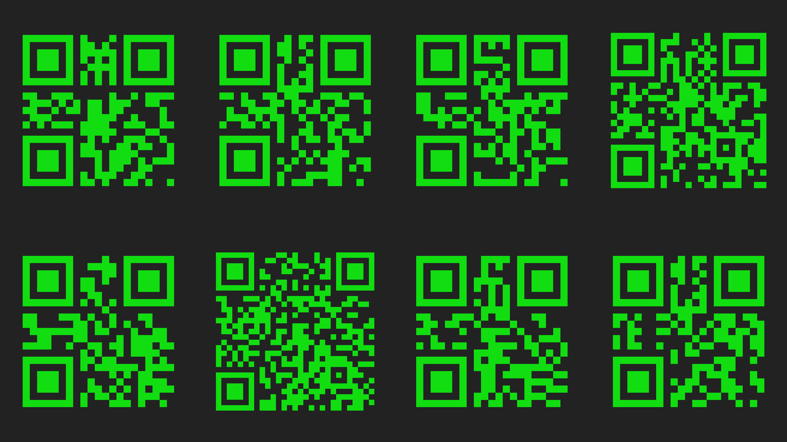

Aquí hay algunos desafíos criptográficos pensados para jugar con el público del Festival del Ingenio. Si estabas ahí en ese momento (y era sábado) podías acercarte a la mesa para descifrar los mensajes a la antigua, con lápiz y papel. Pero como es posible que hayas ido el domingo o incluso no hayas ido, los desafíos también te esperan en este sitio.
Cada mensaje cifrado es seguido por una pista y el texto plano que lo originó. Sólo tenés que tocar el bloque oscuro (o pasar el puntero del mouse por arriba) para descubrir el misterio. Un pequeño homenaje a las raspaditas que siempre me decían que siguiera participando.
Si usás Telegram podés pedirle a CryptoEX Bot que te ayude. Tanto para resolver algunos de los desafíos que encontrás acá como para crear los tuyos y empezar a llenar chats con mensajes secretos. Si tenés críticas, comentarios o preguntas escribime.
WOQ FG NQU CNIQTKVÑQU FG EKHTCFQ ÑÁU COVKIWQU SWG GZKUVGO GU GN EKHTCFQ FGN EÉUCT. GU WO EKHTCFQ RQT UWUVKVWEKÓO GO GN SWG NCU NGVTCU FGN VGZVQ RNCOQ UG ÑWGXGO GO GN CDGEGFCTKQ WOC FKUVCOEKC HKLC. RQT GLGÑRNQ, GO GUVG ECUQ, ECFC NGVTC UG ÑQXKÓ 4 NWICTGU. RCTC FGUEKHTCTNQ CNECOBC EQO ÑQXGT ECFC NGVTC GO GN CDGEGFCTKQ, NC ÑKUÑC FKUVCOEKC RGTQ GO UGOVKFQ EQOVTCTKQ.
Si sabés el abecedario, podés hacer que cada letra de un salto.
Uno de los algoritmos de cifrado más antiguos que existen es el cifrado del César. Es un cifrado por sustitución en el que las letras del texto plano se mueven en el abecedario una distancia fija. Por ejemplo, en este caso, cada letra se movió 2 lugares. Para descifrarlo alcanza con mover cada letra en el abecedario, la misma distancia pero en sentido contrario.
y/ø^(;& )√ø}√&ø%+%*(*+^(ó/ø} &#^#ø({}√%([=#ø)#ø)#%^(;& &ø^+ /)óø= ø^= -#ø%#ø^√/%*&+_#ø =ø : &ø†^ ) ø=#*& ø^ {[( ø}√&ø^+ =.+(#&ø√*& ~åøg#&√ø, _ø=#*& %ø.+#ø%#ø+% /ø{+^,√ø{á%ø.+#ø√*& %åøp/ =(: /)√ø= ø;&#^+#/^( ø&#= *(- ø)#ø=√%ø%í{[√=√%ø}√)é%∫ø^√/ø} ^(#/^( ∫ø)#%^(;& &ø#=ø{#/% <#åøj+& /*#ø{+^,√%ø >√%∫ø.+(#/#%ø^√/√^í /ø#=ø /á=(%(%ø)#ø;&#^+#/^( ∫ø)#%^(;& &√/ø=√%ø{#/% <#%ø%#^&#*√%ø)#ø.+(#/#%ø^√/;( [ /ø#/ø=√%ø^(;& )√%ø}√&ø%+%*(*+^(ó/å
No usamos todos los símbolos con la misma frecuencia. El espacio es el más frecuente.
Un cifrado por sustitución parece imposible de descifrar cuandó la clave se construye al azar (cada letra cambia por cualquier otra). Pero hay letras que se usan mucho más que otras. Analizando la frecuencia relativa de los símbolos podés, con paciencia, descifrar el mensaje. Durante muchos años, quienes conocían el análisis de frecuencia, descifraron los mensajes secretos de quienes confiaban en los cifrados por sustitución.
CJ IKHTDWES ZMK CJ VBYLTWI ABI XÉÑVN CQ ÑRB CQ JRV ZEKVXMJG. EMV YWOE PLZL CJ HPIYK OWXA WLUKATAK X CJ QRUSUTQIYF ODZIZ 05 FYÑMUN (IM ÑRB KMP ZAFW 04 WFUPYN SXIJXCJPI). ZMK RKX REBFKJPSEHP JIWLÍTM KMJVUM OKYVÑ IXP DCGVOVYVQÑQRG (TUJSYVIQI CJ FXGMTCX NMO ZOYMTU VMOÑU) CL DMTYÍKZDG HZIKÑ ÑRB SL LWYNFVH. QC LPZYZ FXCILTL SL LKXK.
El Cifrado del César es muy inseguro. ¿Cómo le mejorarías?
El problema con el cifrado del César es que es muy inseguro. Hoy casi todo el mundo sabe escribir y el abecedario tiene 27 letras (lo que nos deja 26 claves distintas). Con una computadora podrías probar todas las posibilidades (descifrar el mensaje por fuerza bruta) en muchísimo menos que un segundo. Se puede mejorar un poco.
sE elbisop raibmac ed nóicisop sol solobmís led otxet onalp nis etnemairasecen solraibmac rop .sorto euqnuA yah euq rasnep nu ocop arap euq le ejasnem odarfic on etluser .oivbo
Intentá leer para atrás.
Es posible cambiar de posición los símbolos del texto plano sin necesariamente cambiarlos por otros. Aunque hay que pensar un poco para que el mensaje cifrado no resulte obvio.
u sárta arap reeLnem natsab res edeup odarfic ejasna is licífid etni ed setnedro le ritrevnem le sítrap solobmís sol ed ne ejasnúgla rop sozadep nahcevorpA .oñartxe ragul n al euq odnatsab ecerapa ne etnem etse ne otxet le ritrap somedop ejasn adac ni ,neib olrarficsed sédoP¿ .solragep a revlov y sozadep sol ritrevn?aroha odipár n
Este mensaje ha sido partido en pedazos.
Leer para atrás un mensaje cifrado puede ser bastante difícil si antes de invertir el orden de los símbolos partís el mensaje en pedazos por algún lugar extraño. Aprovechando que la n aparece bastante en este mensaje podemos partir el texto en cada n, invertir los pedazos y volver a pegarlos. ¿Podés descifrarlo bien rápido ahora?
DUILF ÑH LPGRDUILF ÑH LP UDVÉF ÑHG GRDWXSORF PDÍPHW RP HXT ,VHWPD HG VRÑ VRPHO ÑD( VRIDUJÓWSLUF VRKFXO D UDWVLSVHG VÉGRS RUWR ÑHG VÉXSVHG RPX VÁVX LV RUHS ,VRUXJHV BXO PRV RMHSVH PH GR.)VDU
Encadenando algoritmos podés obtener un mensaje cifrado más seguro.
Ni el Cifrado del César ni el cifrado en espejo son muy seguros, pero si usás uno después del otro podés despistar a muchos criptógrafos (al menos los de antes, que no tenían computadoras).
LínR u os Spn sifAa mu.rm non ae úsd¡ n m aPrs eemeea rneroj o nore sct d ratec pilano rpemam itsbro mo i ogeéle srnnos a st sfep e oílus! na eí adm ipleb mogno pro l oqrso ruies tetr a mvd nsoie to r
¿Oíste hablar de los números primos? ¿Y de los coprimos?
Los números primos son importantísimos en criptografía porque son fundamentales en el algoritmo RSA. ¡Pero también pueden servir para reordenar los símbolos de un mensaje como este!
